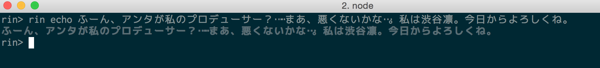
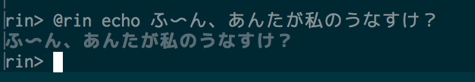
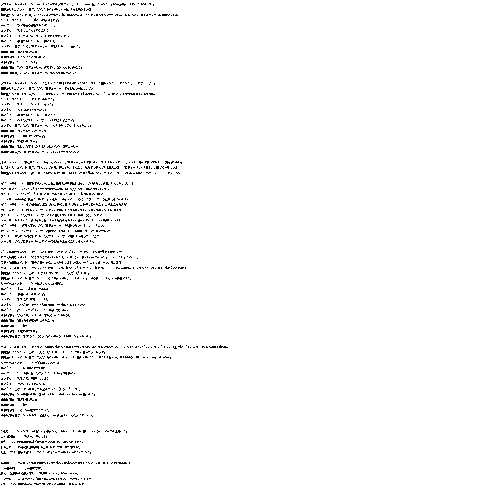
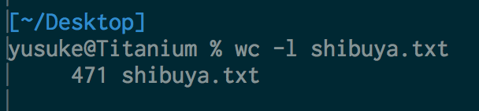
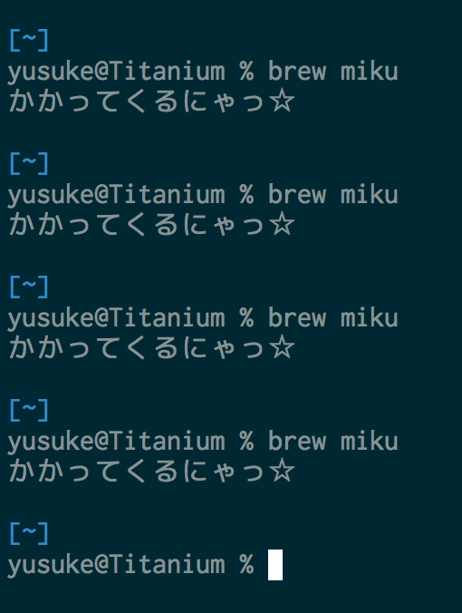
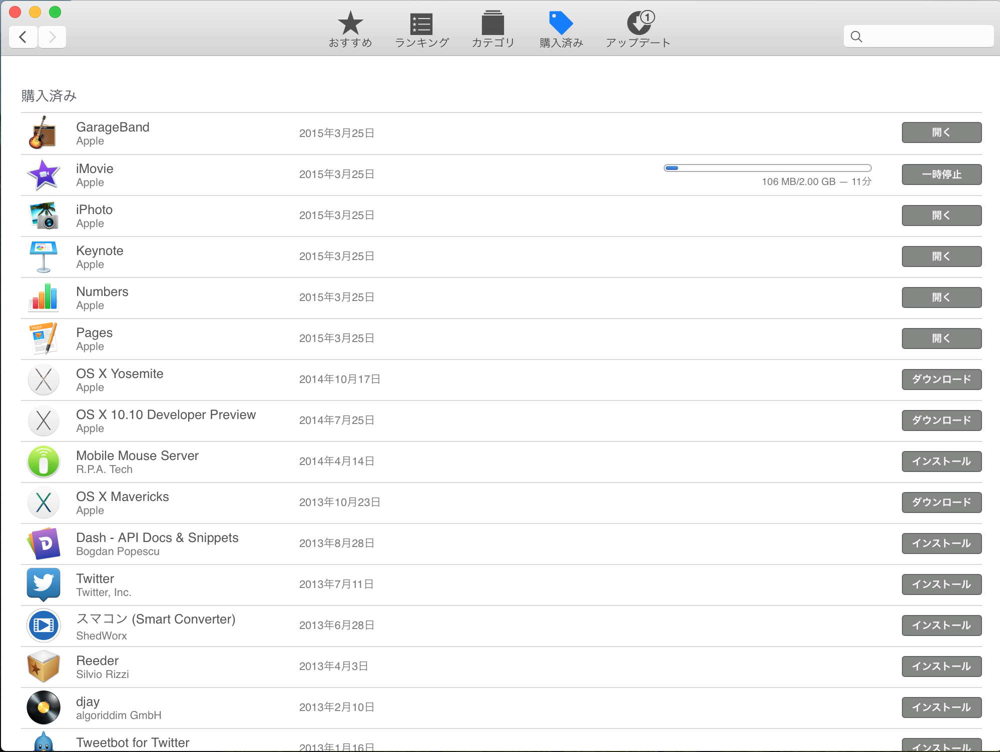
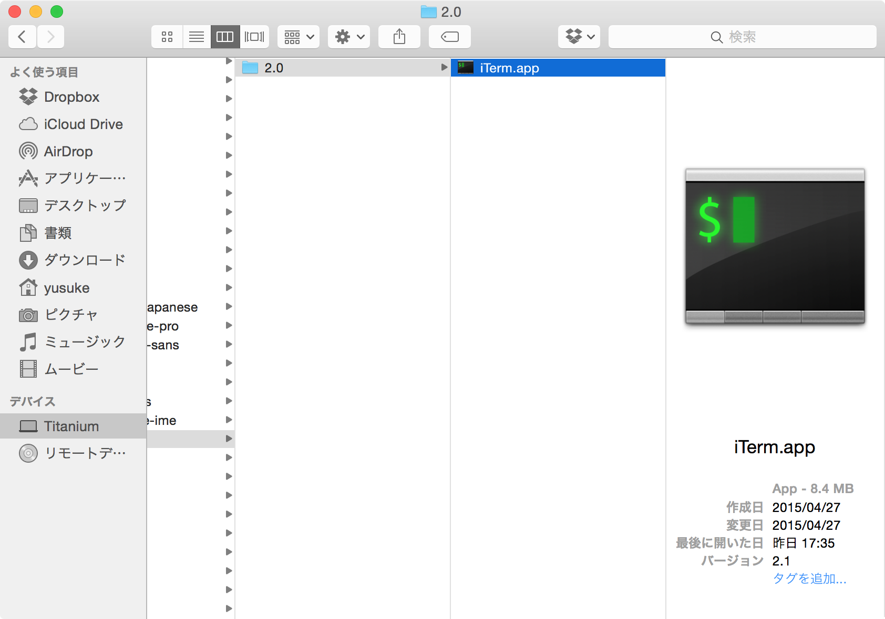

つくろうと
しているもの
2015-05-04 kosen10sLT #01
うなすけ / @yu_suke1994
どっちをみますか？
渋谷凛
渋谷凛
hubot-rin
hubot-rinとは？

hubotは"@hubot image hoge"するとhogeでGoogle画像検索した結果を貼ってくれる
hubot-rinとは
先輩「あ〜渋谷凛……渋谷凛になりたい……」
ぼく「せめて"@hubot rin"でしぶりんの画像出たらいいですよね」
先輩「あ〜……いい……いや、"@rin"したい」
ぼく「"@rin"」
@rinしたい
hubot-rinにやってほしいこと
- @rinで画像が返ってくる
- ついでに台詞も返ってくる
- ガチャみたく、レアカードの台詞はなかなか出ない
- 「凛」とか「しぶりん」とかの言葉に反応して欲しい
hubotをつくろう!
そもそもhubotとは、GitHub社製のBotフレームワークです。Botを簡単に作ることができます。
(中身はCoffeeScript)
hubotをつくろう！
% npm install -g yo generator-hubot
% mkdir hubot-rin
% cd hubot-rin
% yo hubot
これでひな形の出来上がりです
hubotをつくろう！
基本的なコマンドはすでにあります
hubotをつくろう！
ぼく「さてと、じゃあしぶりんのセリフ集めるかな」
ウッッッッッッッ！！！！！！！！
hubotをつくろう！
めっちゃある
hubotをつくろう！
ざっと471個のセリフ
hubotoをつくろう！
セリフ集めで力尽きて、いまのところここまでしかできてないです……
hubot-rin
Pull requestは受け付けておりません！！！！前川みく
前川みく
brew-miku
ところで
みんなhomebrew知ってる？使ってる？
homebrewとは
Homebrew（ホームブルー）は、Mac OS Xオペレーティングシステム上でソフトウェアの導入を単純化するパッケージ管理システムのひとつである。MacPortsやFinkと同様の目的と機能を備えている。
homebrewとは
要するに、OS Xでのaptやyumみたいなもの
ところで2
みんなbrew-cask知ってる？使ってる？
brew-caskとは
homebrewの拡張コマンドで、chromeなどの.app形式のプログラムをコマンドラインからインストールできる。
例
% brew cask install google-chrome
% brew cask install vivaldi
#やさしいせかい
brew-caskのつらいところ その1
brew-cask経由でインストールしたアプリはLaunchpadに表示されない
これは実は設定次第brew-caskのつらいところ その2
App Storeと相性が悪い
brew-caskのつらいところ その3
brew-cask自体のバージョン管理とアプリの自動アップデートが連動しない
brew-caskはつらい
先輩「brew-caskつらい……」
ぼく「つらい……」
ぼく「単に.appを/Applicationsにcpすればいいのに」
先輩「それよさそう！作ってよ！」
ぼく「なんかいい名前くれたら作りますよ」
先輩「みくでいいじゃん。mikuで」
brew-miku
brew-mikuにやってほしいこと
- caskのようなバージョン管理をしないでほしい
- 何がインストールされているのか管理していてほしい
- アンインストールもしてほしい
ほとんどbrew-caskと一緒じゃねぇか……
インストールできます！
% brew install unasuke/miku/brew-miku --HEAD
% brew miku
かかってくるにゃっ☆
brew-mikuをつくろう！
ただいまbrew-caskのコードリーディング中です……
brew-miku
やっぱりPull requestは受け付けておりません！！！！まとめ
ぜんぜんできてません。